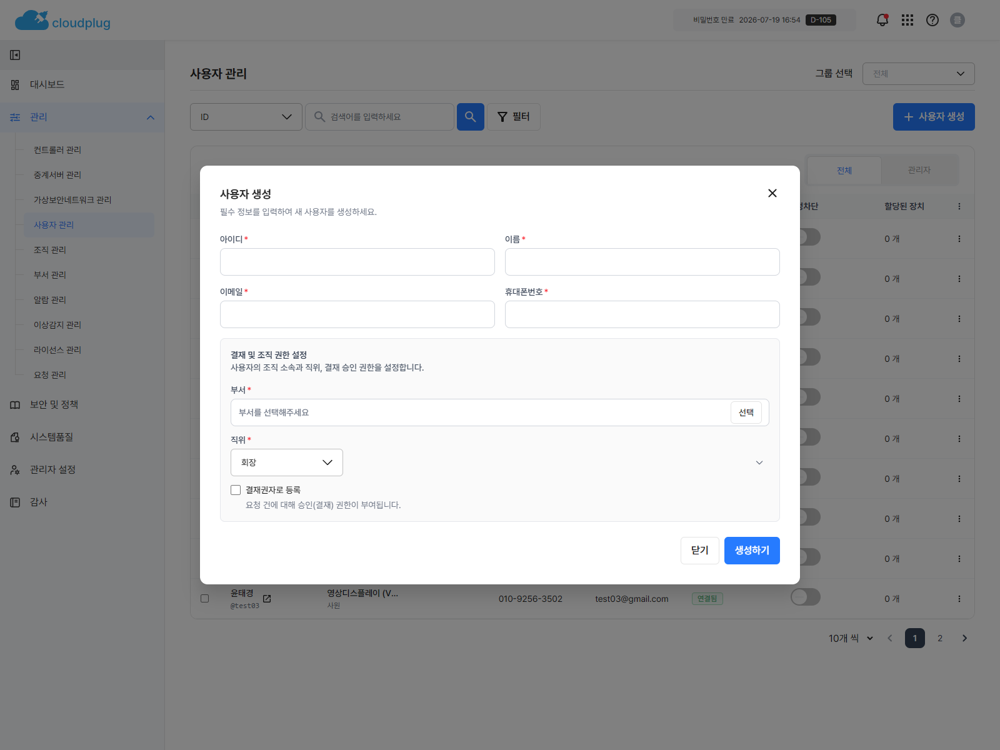
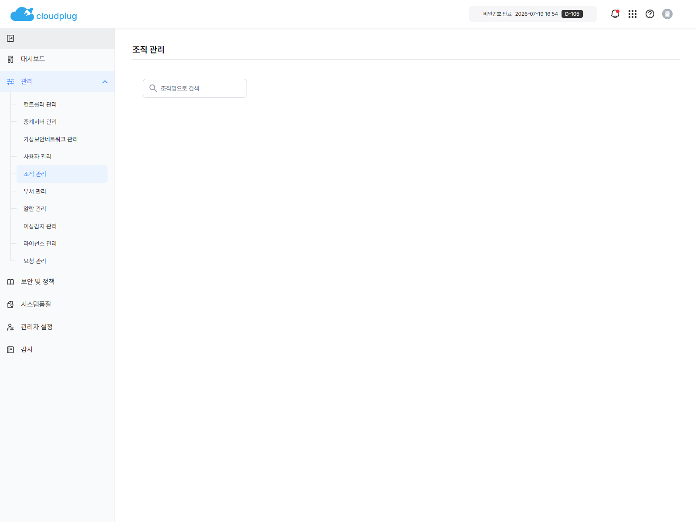
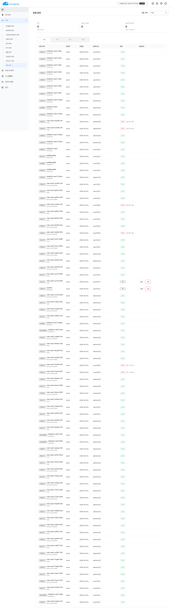

1.1 작성 목적
본 문서의 목적은 IDN 서비스에서 제공하는 주요 기능을 사용자가 정확하게 이해하고, 실제 업무 환경에서 원활하게 활용할 수 있도록 지원하는 데 있다.
Operational Documentation
본 문서는 ㈜클라우드플러그에서 개발한 IDN 서비스 사용자를 대상으로 시스템의 주요 기능과 화면 구성, 그리고 각 기능별 사용 방법을 이해하기 쉽도록 설명하기 위해 작성된 문서이다.
최고 관리자는 전체 그룹 범위 또는 특정 그룹 범위를 선택하여 데이터를 조회할 수 있으며, 조직 관리, 라이선스 관리, 보안 정책, 시스템품질 메뉴에 접근할 수 있다.
실제 운영에서는 대시보드 점검 후 조직/사용자 구조 정비, 네트워크 자원 관리, 보안 정책 점검, 시스템 품질 검증 순으로 진행하는 것이 안전하다.
본 문서의 목적은 IDN 서비스에서 제공하는 주요 기능을 사용자가 정확하게 이해하고, 실제 업무 환경에서 원활하게 활용할 수 있도록 지원하는 데 있다.
| 항목 | 내용 |
|---|---|
| 문서명 | IDN 2.0 사용자 매뉴얼 |
| 작성자 | 이원정/윤태경 |
| 문서 버전 | 1.0 |
| 작성일자 | 2026-04-05 |
| 최종 수정일자 | 2026-04-05 |
| 파일명 | IDN2.0_사용자 매뉴얼_최고관리자 |
최고 관리자는 로그인 화면에서 IDN 계정 ID와 비밀번호를 입력해 접속한다. 인증 결과에 따라 대시보드, 2단계 인증 또는 비밀번호 재설정 화면으로 이동한다.
▶메뉴 위치: 로그인 화면
▶기능 설명:
관리자 계정으로 시스템에 접속한다.
계정 정보 검증 후 관리자 메인 화면으로 이동한다.
▶사용 절차:
1. 로그인 화면에 접속한다.
2. 아이디와 비밀번호를 입력한다.
3. 로봇 확인 항목을 선택한다.
4. 로그인 버튼을 클릭한다.
5. 인증 결과에 따라 대시보드, 2단계 인증, 비밀번호 재설정 화면으로 이동한다.
▶입력 항목:
| 항목 | 설명 | 입력 가이드 |
|---|---|---|
| 아이디 | 관리자 계정 ID | 필수 입력 |
| 비밀번호 | 계정 비밀번호 | 필수 입력 |
▶처리 결과 / 유의사항:
로그인 실패 시 오류 메시지 모달이 표시된다.
비밀번호 변경이 필요한 계정은 비밀번호 재설정 화면으로 이동한다.
로그인 후 내부 동기화로 첫 화면 전환이 잠시 지연될 수 있다.
접근 허용 장치 IP가 등록되지 않았거나 비밀번호가 만료된 경우 로그인이 제한될 수 있다.
로그인 실패 시 화면에 표시되는 메시지를 확인한 후, 필요한 경우 관리자에게 문의하여 계정 상태를 확인해야 한다.
▶스크린샷:

[로그인 화면] |
▶메뉴 위치: 로그인 후 2단계 인증 화면
▶기능 설명:
추가 인증이 필요한 계정에 대해 인증코드를 확인한다.
▶사용 절차:
1. 로그인 후 2단계 인증 화면으로 이동한다.
2. 인증코드 요청 버튼을 클릭한다.
3. 전달받은 인증코드를 입력한다.
4. 인증 완료 후 다음 화면으로 이동한다.
▶화면 내 주요 버튼:
| 버튼명 | 설명 |
|---|---|
| 인증코드 요청 | 인증코드를 재발급한다. |
▶처리 결과 / 유의사항:
코드 유효시간은 화면 기준 180초로 확인된다.
로그인 실패 시 화면에 표시되는 메시지를 확인한 후, 필요한 경우 관리자에게 문의하여 계정 상태를 확인해야 한다.
▶스크린샷:

[2단계 인증 화면] |
▶메뉴 위치: 로그인 후 비밀번호 재설정 화면
▶기능 설명:
최초 로그인 또는 비밀번호 변경 필요 계정의 비밀번호를 재설정한다.
▶사용 절차:
1. 비밀번호 재설정 화면으로 이동한다.
2. 새 비밀번호와 새 비밀번호 확인을 입력한다.
3. 확인 버튼을 클릭한다.
4. 처리 결과를 확인한다.
▶입력 항목:
| 항목 | 설명 | 입력 가이드 |
|---|---|---|
| 새 비밀번호 | 변경할 비밀번호 | 정책에 맞게 입력 |
| 새 비밀번호 확인 | 변경 비밀번호 확인 | 동일 값 입력 |
▶화면 내 주요 버튼:
| 버튼명 | 설명 |
|---|---|
| 확인 | 비밀번호 변경을 수행한다. |
▶처리 결과 / 유의사항:
비밀번호 정책 검증 후 저장된다.
변경 후 재로그인이 필요할 수 있다.
▶스크린샷:

[비밀번호 재설정 화면] |
| 영역 | 설명 |
|---|---|
| 로고 | 클릭 시 대시보드로 이동 |
| 그룹 컨텍스트 | 전체 또는 특정 그룹 범위 선택 |
| 알림 | 미확인 알람 조회 및 읽음 처리 |
| 매뉴얼 | 버튼 존재 확인, 연결 대상은 확인 필요 |
| 프로필 | 관리자 설정 이동, 로그아웃 |
| 1차 메뉴 | 2차 메뉴 |
|---|---|
| 대시보드 | 대시보드 |
| 관리 | 컨트롤러 관리, 중계서버 관리, 가상보안네트워크 관리, 사용자 관리, 조직 관리, 부서 관리, 알람 관리, 이상감지 관리, 라이선스 관리, 요청 관리 |
| 보안 및 정책 | 계정 보안, 비밀번호 보안, IP 접근 제어, 시험 파일 |
| 시스템품질 | 시스템품질 |
| 관리자 설정 | 관리자 설정 |
| 감사 | 감사 |
`전체` 범위에서는 생성이 막히는 메뉴가 있으므로 생성 전 상단 그룹 선택을 먼저 확인한다.
검색과 필터를 우선 사용하고, 중요한 변경 후에는 시스템 품질과 감사 로그를 함께 확인한다.
업로드가 필요한 라이선스 파일과 시험 파일은 작업 전에 미리 준비한다.
| 메뉴 | 설명 |
|---|---|
| 관리자 설정 | 관리자 이름, 이메일, 휴대폰 번호 수정 및 비밀번호 변경 |
| 로그아웃 | 현재 세션 종료 후 로그인 화면 이동 |
▶메뉴 위치: 좌측 메뉴 > 대시보드
▶기능 설명:
전체 또는 선택 그룹 기준의 운영 현황을 요약해 보여준다.
알람 현황, 사용자 현황, VNET 기준 통계, 최근 감사 로그를 확인할 수 있다.
알람 차트를 클릭하면 알람 관리 화면으로 이동한다.
▶사용 절차:
1. 좌측 메뉴에서 대시보드를 선택한다.
2. 필요 시 상단 그룹 컨텍스트를 변경한다.
3. 카드, 차트, 최근 로그를 확인한다.
4. 세부 확인이 필요한 항목을 클릭해 관련 화면으로 이동한다.
▶처리 결과 / 유의사항:
그룹 컨텍스트 변경 시 대시보드 데이터가 다시 조회된다.
실시간 알람 SSE 구독이 동작한다.
차단 사용자 수가 급증하면 계정 보안과 IP 접근 제어 정책을 함께 점검한다.
최근 감사 이력을 함께 보면 선행 작업과 변경 주체를 빠르게 파악할 수 있다.
▶스크린샷:

[대시보드 화면] |
컨트롤러는 가상 네트워크(VNET)를 구성하고 운영하는 데 필요한 전용 서버이다. 각 조직별로 네트워크 환경을 만들기 위해서는 반드시 하나 이상의 컨트롤러 서버가 시스템에 등록되어 있어야 한다.
▶메뉴 위치: 좌측 메뉴 > 관리 > 컨트롤러 관리
▶기능 설명:
컨트롤러 목록 조회, 검색, 등록, 수정, 삭제를 수행한다.
상태와 등록 상태를 함께 확인할 수 있다.
▶사용 절차:
1. 컨트롤러 관리 메뉴로 이동한다.
2. 검색 조건을 입력해 목록을 조회한다.
3. `컨트롤러 등록` 버튼으로 신규 등록한다.
4. 행 단위 수정 또는 삭제를 수행한다.
5. 저장 또는 삭제 결과를 확인한다.
▶입력 항목:
| 항목 | 설명 | 입력 가이드 |
|---|---|---|
| 검색 대상 | 검색 기준 | 컨트롤러 이름 기준 선택 |
| 검색어 | 조회 키워드 | 이름 일부 입력 가능 |
▶화면 내 주요 버튼:
| 버튼명 | 설명 |
|---|---|
| 컨트롤러 등록 | 신규 컨트롤러 정보를 등록한다. |
| 수정 | 선택 행 정보를 수정한다. |
| 삭제 | 선택 행을 삭제한다. |
▶처리 결과 / 유의사항:
최고 관리자는 전체 그룹 범위에서는 등록이 제한되고 그룹을 선택해야 등록 가능하다.
그룹 범위 선택 시 `group_idx` 기준으로 목록이 조회된다.
수정 시 외부/내부 IP, Port, 네트워크 인터페이스 값은 VNET과 엔드포인트 운영에 직접 영향을 준다.
▶스크린샷:

[컨트롤러 관리 화면] |
검색 조건과 그룹 범위를 기준으로 컨트롤러 목록을 조회한다.
1. 컨트롤러 관리 화면으로 이동한다.
2. 그룹, 검색 대상, 검색어를 입력한다.
3. 조회 버튼 또는 검색 실행으로 목록을 확인한다.
신규 컨트롤러 정보를 입력해 등록한다.
1. `컨트롤러 등록` 버튼을 클릭한다.
2. 필수 항목을 입력하고 저장한다.
3. 저장 후 목록에 신규 항목이 반영되는지 확인한다.
▶입력 항목:
| 항목 | 설명 | 입력 가이드 |
|---|---|---|
| 컨트롤러 이름 | 시스템 식별용 고유 이름 | - 영문, 숫자, 일부 특수문자(-)만 사용 가능 - 중복 불가 및 생성 후 수정 불가 |
| 설명 | 관리용 메모 |
▶스크린샷:

[컨트롤러 생성 화면] |
목록에서 선택한 컨트롤러 정보를 변경한다.
1. 수정할 컨트롤러 행을 선택한다.
2. `수정` 버튼을 클릭한다.
3. 변경 내용을 저장하고 반영 결과를 확인한다.
▶입력 항목:
| 항목 | 설명 | 입력 가이드 |
|---|---|---|
| 컨트롤러 이름 | 시스템 식별용 고유 이름 | 수정 불가 |
| 설명 | 관리용 메모 | |
| 외부IP | 외부망 통신용 공인 IP 주소 |
- IPv4 형식(예: 192.168.0.1)으로 입력 - 각 자릿수는 0~255 범위 내 숫자만 가능 - 아래 IP 주소 사용 불가 (127.0.0.1/0.0.0.0/255.255.255.255) |
| 외부 포트 | 외부 통신용 통로 번호 | 1 ~ 65535 범위 내 숫자만 입력 가능 |
| 내부 IP | 내부망 통신용 사설 IP 주소 |
- IPv4 형식(예: 192.168.0.1)으로 입력 - 각 자릿수는 0~255 범위 내 숫자만 가능 - 아래 IP 주소 사용 불가 (127.0.0.1/0.0.0.0/255.255.255.255) |
| 내부 포트 | 내부 통신용 통로 번호 | 1 ~ 65535 범위 내 숫자만 입력 가능 |
| 네트워크 인터페이스 | 장치 연결 통로 명칭 | 수정 불가 |
| UUId | 기기 고유 식별 번호 | 수정 불가 |
| MAC 주소 | ||
▶스크린샷:

[컨트롤러 수정 화면] |
선택한 컨트롤러를 삭제한다.
1. 삭제할 컨트롤러 행을 선택한다.
2. `삭제` 버튼을 클릭한다.
3. 확인 창에서 삭제를 확정한다.
▶스크린샷:
컨트롤러 삭제 확인 화면 캡처 파일은 현재 저장소에서 추가 확인이 필요하다.
▶메뉴 위치: 좌측 메뉴 > 관리 > 중계서버 관리
▶기능 설명:
중계서버 목록 조회, 등록, 수정, 삭제를 수행한다.
상태, 등록 상태, 외부/내부 IP와 포트를 확인할 수 있다.
▶사용 절차:
1. 중계서버 관리 메뉴로 이동한다.
2. 검색 조건으로 목록을 조회한다.
3. `중계서버 등록` 버튼을 클릭한다.
4. 필요한 정보를 입력해 저장한다.
5. 목록에서 수정 또는 삭제를 수행한다.
▶입력 항목:
| 항목 | 설명 | 입력 가이드 |
|---|---|---|
| 검색 대상 | 검색 기준 | 중계서버 이름 기준 |
| 검색어 | 조회 키워드 | 이름 일부 입력 가능 |
▶화면 내 주요 버튼:
| 버튼명 | 설명 |
|---|---|
| 중계서버 등록 | 신규 중계서버를 등록한다. |
| 수정 | 선택 행 정보를 수정한다. |
| 삭제 | 선택 행을 삭제한다. |
▶처리 결과 / 유의사항:
그룹 범위 선택 시 선택 그룹 기준으로 조회된다.
▶스크린샷:

[중계서버 관리 화면] |
검색어와 그룹 범위를 기준으로 중계서버 목록을 조회한다.
1. 중계서버 관리 화면으로 이동한다.
2. 검색 대상과 검색어를 입력한다.
3. 조회 실행 후 상태와 IP, 포트 정보를 확인한다.
신규 중계서버를 등록한다.
1. `중계서버 등록` 버튼을 클릭한다.
2. 필수 정보를 입력하고 저장한다.
3. 저장 후 목록 반영 여부를 확인한다.
▶입력 항목:
| 항목 | 설명 | 입력 가이드 |
|---|---|---|
| 세부 입력 항목 | 중계서버 생성 팝업 또는 등록 화면의 필드 구성 | 현재 저장소 기준 화면 캡처 또는 명세가 없어 추가 확인 필요 |
▶스크린샷:
중계서버 생성 화면 캡처 파일은 현재 저장소에서 추가 확인이 필요하다.
선택한 중계서버 정보를 변경한다.
1. 수정할 중계서버 행을 선택한다.
2. `수정` 버튼을 클릭한다.
3. 변경 내용을 저장하고 반영 결과를 확인한다.
▶스크린샷:
중계서버 수정 화면 캡처 파일은 현재 저장소에서 추가 확인이 필요하다.
선택한 중계서버를 삭제한다.
1. 삭제할 중계서버 행을 선택한다.
2. `삭제` 버튼을 클릭한다.
3. 확인 창에서 삭제를 확정한다.
▶스크린샷:
중계서버 삭제 확인 화면 캡처 파일은 현재 저장소에서 추가 확인이 필요하다.
▶추가 화면:
 [중계서버 등록 팝업] |
▶메뉴 위치: 좌측 메뉴 > 관리 > 가상보안네트워크 관리
▶기능 설명:
VNET, 엔드포인트, 토폴로지, 네트워크 맵, 네트워크 마법사 화면으로 이동해 네트워크 자원을 관리한다.
▶사용 절차:
1. 가상보안네트워크 관리 메뉴로 이동한다.
2. 상단 탭 또는 내부 이동 버튼으로 세부 화면을 선택한다.
3. 대상 네트워크 또는 엔드포인트를 조회한다.
4. 생성, 수정, 삭제, 상태 변경 등 필요한 작업을 수행한다.
▶처리 결과 / 유의사항:
내부 세부 화면은 아래 하위 항목으로 구분한다.
▶스크린샷:

[가상보안네트워크 관리 메인 화면] |
▶메뉴 위치: 좌측 메뉴 > 관리 > 가상보안네트워크 관리 > VNET
▶기능 설명:
VNET 목록을 조회하고 생성, 수정, 삭제한다.
암호화 알고리즘, 기기 인증, 참여 허용, 외부 트래픽 허용 상태를 관리한다.
▶사용 절차:
1. VNET 화면으로 이동한다.
2. 필터와 검색 조건으로 목록을 조회한다.
3. `VNET 생성` 버튼으로 신규 네트워크를 만든다.
4. 행 단위 수정 또는 삭제를 수행한다.
5. 참여 허용, 외부 트래픽 허용 토글을 변경한다.
▶화면 내 주요 버튼:
| 버튼명 | 설명 |
|---|---|
| VNET 생성 | 신규 VNET을 생성한다. |
| 수정 | 선택 VNET 정보를 수정한다. |
| 삭제 | 선택 VNET을 삭제한다. |
▶처리 결과 / 유의사항:
최고 관리자는 전체 범위 상태에서 신규 생성 제한이 적용된다.
IP 수정 가능 여부는 별도 조회 결과에 따라 달라진다.
▶스크린샷:
|
[VNET 목록 화면] |
필터와 검색 조건으로 VNET 목록을 조회한다.
1. VNET 목록 화면으로 이동한다.
2. 검색 조건과 필터를 설정한다.
3. 조회 결과에서 상태와 속성 정보를 확인한다.
신규 VNET을 생성한다.
1. `VNET 생성` 버튼을 클릭한다.
2. 네트워크 정보를 입력하고 저장한다.
3. 생성 후 목록에 반영됐는지 확인한다.
▶입력 항목:
| 항목 | 설명 | 입력 가이드 |
|---|---|---|
| 세부 입력 항목 | VNET 생성 화면의 필드 구성 | 현재 저장소 기준 화면 캡처 또는 명세가 없어 추가 확인 필요 |
▶스크린샷:
VNET 생성 화면 캡처 파일은 현재 저장소에서 추가 확인이 필요하다.
기존 VNET 설정값을 변경한다.
1. 수정할 VNET 행을 선택한다.
2. `수정` 버튼을 클릭한다.
3. 변경 내용을 저장하고 결과를 확인한다.
▶스크린샷:
VNET 수정 화면 캡처 파일은 현재 저장소에서 추가 확인이 필요하다.
선택한 VNET을 삭제한다.
1. 삭제할 VNET 행을 선택한다.
2. `삭제` 버튼을 클릭한다.
3. 확인 창에서 삭제를 확정한다.
▶스크린샷:
VNET 삭제 확인 화면 캡처 파일은 현재 저장소에서 추가 확인이 필요하다.
▶추가 화면:
 [VNET 생성 팝업] |
▶메뉴 위치: 좌측 메뉴 > 관리 > 가상보안네트워크 관리 > 엔드포인트
▶기능 설명:
엔드포인트 목록을 조회하고 생성, 수정, 삭제한다.
사용자 할당 여부, 상태, 참여 허용, 외부 트래픽 허용을 관리한다.
상세 패널에서 메모를 기록할 수 있다.
▶사용 절차:
1. 엔드포인트 화면으로 이동한다.
2. 검색과 필터로 대상을 찾는다.
3. `엔드포인트 생성` 버튼을 클릭한다.
4. 행을 클릭해 상세 패널을 연다.
5. 메모 작성, 토글 변경, 수정, 삭제를 수행한다.
▶화면 내 주요 버튼:
| 버튼명 | 설명 |
|---|---|
| 엔드포인트 생성 | 신규 엔드포인트를 등록한다. |
| 수정 | 선택 엔드포인트를 수정한다. |
| 삭제 | 선택 엔드포인트를 삭제한다. |
▶처리 결과 / 유의사항:
사용자 할당/해제 기능이 함께 제공된다.
상세 패널에서 메모 저장이 가능하다.
▶스크린샷:

[엔드포인트 목록 화면] |
검색과 필터 조건으로 엔드포인트 목록을 조회한다.
1. 엔드포인트 목록 화면으로 이동한다.
2. 검색 조건과 필터를 입력한다.
3. 조회 결과에서 상태와 할당 여부를 확인한다.
신규 엔드포인트를 등록한다.
1. `엔드포인트 생성` 버튼을 클릭한다.
2. 필요한 정보를 입력하고 저장한다.
3. 저장 후 목록 반영 여부를 확인한다.
▶입력 항목:
| 항목 | 설명 | 입력 가이드 |
|---|---|---|
| 세부 입력 항목 | 엔드포인트 생성 화면의 필드 구성 | 현재 저장소 기준 화면 캡처 또는 명세가 없어 추가 확인 필요 |
▶스크린샷:
엔드포인트 생성 화면 캡처 파일은 현재 저장소에서 추가 확인이 필요하다.
선택한 엔드포인트 정보를 변경한다.
1. 수정할 엔드포인트 행을 선택한다.
2. `수정` 버튼을 클릭한다.
3. 변경 내용을 저장하고 반영 결과를 확인한다.
▶스크린샷:
엔드포인트 수정 화면 캡처 파일은 현재 저장소에서 추가 확인이 필요하다.
선택한 엔드포인트를 삭제한다.
1. 삭제할 엔드포인트 행을 선택한다.
2. `삭제` 버튼을 클릭한다.
3. 확인 창에서 삭제를 확정한다.
▶스크린샷:
엔드포인트 삭제 확인 화면 캡처 파일은 현재 저장소에서 추가 확인이 필요하다.
▶추가 화면:
 [엔드포인트 생성 팝업] |
▶메뉴 위치: 좌측 메뉴 > 관리 > 가상보안네트워크 관리 > 토폴로지
▶기능 설명:
네트워크 토폴로지를 시각적으로 확인한다.
VNET 생성, 엔드포인트 생성, 자동 배치 기능을 제공한다.
엔드포인트 상세 정보와 메모를 확인할 수 있다.
▶사용 절차:
1. 토폴로지 화면으로 이동한다.
2. 검색 조건으로 VNET 또는 엔드포인트를 찾는다.
3. 그래프에서 대상을 선택한다.
4. 상세 패널에서 상태와 메모를 확인한다.
5. 필요 시 자동 배치 또는 생성 작업을 수행한다.
▶화면 내 주요 버튼:
| 버튼명 | 설명 |
|---|---|
| VNET 생성 | 새 VNET을 생성한다. |
| 엔드포인트 생성 | 새 엔드포인트를 생성한다. |
| 자동 배치 | 그래프 배치를 자동 정렬한다. |
▶처리 결과 / 유의사항:
상세 패널의 일부 상태 정보는 실시간 이벤트로 갱신될 수 있다.
▶스크린샷:

[토폴로지 화면] |
▶메뉴 위치: 좌측 메뉴 > 관리 > 가상보안네트워크 관리 > 네트워크 맵
▶기능 설명:
VNET 중심의 맵 화면을 제공한다.
▶사용 절차:
1. 네트워크 맵 화면으로 이동한다.
2. 표시되는 네트워크 정보를 확인한다.
▶처리 결과 / 유의사항:
화면 존재는 확인되나 실제 운영 메뉴 노출 방식은 확인 필요다.
▶스크린샷:
|
[네트워크 맵 화면] |
▶메뉴 위치: 좌측 메뉴 > 관리 > 가상보안네트워크 관리 > 네트워크 마법사
▶기능 설명:
JSON 파일 불러오기 또는 폼 작성 방식으로 네트워크 생성을 시작한다.
▶사용 절차:
1. 네트워크 마법사 화면으로 이동한다.
2. `JSON 파일 불러오기` 또는 `폼 작성` 방식을 선택한다.
3. 시작하기 버튼을 클릭한다.
4. 다음 단계 화면에서 정보를 입력한다.
▶화면 내 주요 버튼:
| 버튼명 | 설명 |
|---|---|
| 시작하기 | 선택한 방식으로 마법사를 시작한다. |
▶처리 결과 / 유의사항:
후속 입력 단계 상세 항목은 현재 확인 범위에서 일부만 확인되어 확인 필요다.
▶스크린샷:
|
[네트워크 마법사 화면] |
▶메뉴 위치: 좌측 메뉴 > 관리 > 사용자 관리
▶기능 설명:
사용자 목록 조회, 생성, 수정, 삭제, 잠금/해제, 엔드포인트 할당을 수행한다.
`전체`와 `관리자` 탭을 전환해 조회할 수 있다.
▶사용 절차:
1. 사용자 관리 메뉴로 이동한다.
2. 검색과 필터로 대상을 조회한다.
3. `사용자 생성` 버튼을 클릭한다.
4. 사용자를 클릭해 상세 패널을 연다.
5. 사용자 정보 수정, 장치 할당/해제, 잠금/해제, 삭제를 수행한다.
▶화면 내 주요 버튼:
| 버튼명 | 설명 |
|---|---|
| 사용자 생성 | 신규 사용자를 생성한다. |
| 관리자 탭 | 관리자 권한 사용자만 별도 조회한다. |
| 장치 할당 | 사용자에게 엔드포인트를 연결한다. |
▶처리 결과 / 유의사항:
그룹 컨텍스트를 선택한 경우 해당 그룹 사용자 기준으로 조회된다.
사용자 생성 시 부서와 직위 체계가 먼저 준비되어 있어야 요청 결재 흐름을 안정적으로 운영할 수 있다.
최종 결재권자, 결재권자 표시가 함께 노출된다.
▶스크린샷:

[사용자 관리 화면] |
▶추가 화면:
 [사용자 생성 팝업] |
▶메뉴 위치: 좌측 메뉴 > 관리 > 조직 관리
▶기능 설명:
조직 목록을 카드 형태로 조회한다.
조직 생성, 수정, 삭제 예약, 즉시 삭제, 삭제 예약 취소를 수행한다.
▶사용 절차:
1. 조직 관리 메뉴로 이동한다.
2. 조직명을 검색하거나 전체 목록을 확인한다.
3. 신규 조직 생성 또는 기존 조직 수정 화면을 연다.
4. 삭제 예약, 즉시 삭제, 삭제 예약 취소 중 필요한 작업을 수행한다.
5. 결과를 확인한다.
▶입력 항목:
| 항목 | 설명 | 입력 가이드 |
|---|---|---|
| 조직명 검색 | 조직 조회 키워드 | Enter로 조회 |
▶화면 내 주요 버튼:
| 버튼명 | 설명 |
|---|---|
| 조직 생성 | 신규 조직을 등록한다. |
| 수정 | 조직 정보를 수정한다. |
| 삭제 예약 | 일정 후 삭제 상태로 전환한다. |
| 즉시 삭제 | 즉시 삭제를 수행한다. |
▶처리 결과 / 유의사항:
조직 삭제 방식은 예약 삭제와 즉시 삭제로 구분된다.
조직 생성은 기본 정보, 리소스 설정, 관리자 계정, 사용자 선택의 4단계 흐름으로 진행된다.
운영 중 조직은 즉시 삭제보다 삭제 예약을 우선 검토하는 것이 안전하다.
그룹 관리자 문서에는 포함되지 않는 최고 관리자 전용 메뉴다.
▶스크린샷:
|
[조직 관리 화면] |
▶추가 화면:
 [조직 관리 보조 화면] |
▶메뉴 위치: 좌측 메뉴 > 관리 > 부서 관리
▶기능 설명:
조직 트리 기반으로 부서를 관리한다.
하위 부서 생성, 부서 정보 수정, 부서 삭제, 직위 관리가 가능하다.
▶사용 절차:
1. 부서 관리 메뉴로 이동한다.
2. 트리에서 그룹 또는 부서를 선택한다.
3. 필요 시 하위부서 생성 버튼을 클릭한다.
4. 부서명, 연락처, 설명을 수정하고 저장한다.
5. 직위 목록을 추가, 수정, 순서 변경, 삭제 후 저장한다.
▶입력 항목:
| 항목 | 설명 | 입력 가이드 |
|---|---|---|
| 부서 명 | 부서명 | 선택된 부서 기준 |
| 부서 연락처 | 연락처 | 숫자 또는 형식에 맞게 입력 |
| 부서 설명 | 설명 | 필요 시 입력 |
▶화면 내 주요 버튼:
| 버튼명 | 설명 |
|---|---|
| 하위부서 생성 | 선택 항목 하위에 부서를 생성한다. |
| 부서 삭제 | 선택 부서를 삭제한다. |
| 변경사항 저장 | 부서 정보 또는 직위 변경을 저장한다. |
| 새 직위 생성 | 직위 항목을 추가한다. |
▶처리 결과 / 유의사항:
그룹 노드를 선택하면 일부 입력 필드는 비활성화된다.
그룹 컨텍스트가 적용될 수 있다.
부서와 직위는 사용자 생성 시 즉시 사용되므로 구조 변경 후 `변경사항 저장`을 반드시 수행한다.
▶스크린샷:

[부서 관리 화면] |
▶추가 화면:
 [직위 생성 팝업] |
▶메뉴 위치: 좌측 메뉴 > 관리 > 알람 관리
▶기능 설명:
알람 목록 조회, 필터링, 기간 조회, 상세 보기, 코멘트 작성, 해결 처리를 지원한다.
▶사용 절차:
1. 알람 관리 메뉴로 이동한다.
2. 심각도, 유형, 네트워크 유형, 해결 여부, 기간 조건을 설정한다.
3. 목록에서 알람 번호를 클릭해 상세 패널을 연다.
4. 코멘트를 작성하거나 해결 처리한다.
5. 변경 결과를 확인한다.
▶화면 내 주요 버튼:
| 버튼명 | 설명 |
|---|---|
| 필터 | 조회 조건을 설정한다. |
| 해결 처리 | 선택 알람을 해결 상태로 변경한다. |
▶처리 결과 / 유의사항:
상세 패널에서 알람 코멘트 조회와 등록이 가능하다.
그룹 컨텍스트를 적용해 그룹별 알람을 조회할 수 있다.
미해결 알람을 우선 확인하고 장애 조치 내용은 코멘트로 남기는 것이 좋다.
▶스크린샷:

[알람 관리 화면] |
▶메뉴 위치: 좌측 메뉴 > 관리 > 이상감지 관리
▶기능 설명:
보안, 장애, 리소스 카테고리별 임계치를 관리한다.
주의, 경고, 긴급 단계 기준값을 저장한다.
▶사용 절차:
1. 이상감지 관리 메뉴로 이동한다.
2. 보안, 장애, 리소스 탭 중 하나를 선택한다.
3. 항목별 임계치를 입력하거나 수정한다.
4. 저장 버튼을 클릭한다.
5. 저장 후 재조회된 값을 확인한다.
▶화면 내 주요 버튼:
| 버튼명 | 설명 |
|---|---|
| 저장 | 현재 탭의 임계치 설정을 저장한다. |
▶처리 결과 / 유의사항:
그룹 컨텍스트 적용 시 해당 그룹 기준 규칙이 저장된다.
민감도가 너무 높으면 오탐이 증가하고 너무 낮으면 실제 이상 징후를 놓칠 수 있다.
▶스크린샷:

[이상감지 관리 화면] |
▶메뉴 위치: 좌측 메뉴 > 관리 > 라이선스 관리
▶기능 설명:
라이선스 키, 상태, 활성화일, 만료일, 잔여일을 확인한다.
사용자, 엔드포인트, VNET 사용량을 차트로 확인한다.
`.lic` 파일 업로드로 라이선스를 갱신한다.
▶사용 절차:
1. 라이선스 관리 메뉴로 이동한다.
2. 현재 라이선스 정보를 확인한다.
3. `라이선스 업데이트` 버튼을 클릭한다.
4. `.lic` 파일을 업로드한다.
5. 결과 메시지를 확인한다.
▶화면 내 주요 버튼:
| 버튼명 | 설명 |
|---|---|
| 라이선스 업데이트 | 라이선스 파일을 업로드한다. |
▶처리 결과 / 유의사항:
`.lic` 확장자 파일만 업로드 가능하다.
최고 관리자 전용 메뉴다.
사용량이 최대치에 가까우면 신규 생성 작업 전에 라이선스 여유를 먼저 확인한다.
▶스크린샷:

[라이선스 관리 화면] |
▶추가 화면:
 [라이선스 업데이트 팝업] |
▶메뉴 위치: 좌측 메뉴 > 관리 > 요청 관리
▶기능 설명:
승인 대상 요청을 조회하고 승인 또는 반려한다.
오늘 요청 수, 처리 수, 승인 수, 반려 수를 함께 확인한다.
▶사용 절차:
1. 요청 관리 메뉴로 이동한다.
2. 상태 탭을 선택해 목록을 필터링한다.
3. 대기 중 요청에서 승인 또는 반려를 선택한다.
4. 반려 시 사유를 입력한다.
5. 처리 결과와 카운트를 확인한다.
▶화면 내 주요 버튼:
| 버튼명 | 설명 |
|---|---|
| 승인 | 요청을 승인한다. |
| 반려 | 요청을 반려하고 사유를 입력한다. |
▶처리 결과 / 유의사항:
그룹 컨텍스트 선택 시 해당 그룹 요청만 조회된다.
반려 시에는 사용자가 다시 작업할 수 있도록 사유를 구체적으로 작성하는 것이 좋다.
▶스크린샷:
|
 [요청 관리 화면] |
▶메뉴 위치: 좌측 메뉴 > 보안 및 정책 > 계정 보안
▶기능 설명:
로그인 시도 횟수 제한, 계정 잠금 시간, 오케스트레이터 타임아웃 값을 관리한다.
▶사용 절차:
1. 계정 보안 메뉴로 이동한다.
2. 각 설정 값을 입력한다.
3. 저장 버튼을 클릭한다.
4. 저장 후 반영된 값을 확인한다.
▶입력 항목:
| 항목 | 설명 | 입력 가이드 |
|---|---|---|
| 로그인 시도 제한 | 허용 실패 횟수 | 1~999 |
| 계정 잠금 시간 | 잠금 유지 시간 | 1~999 |
| 오케스트레이터 타임아웃 | 타임아웃 값 | 1~999 |
▶화면 내 주요 버튼:
| 버튼명 | 설명 |
|---|---|
| 설정 저장 | 변경된 정책 값을 저장한다. |
▶처리 결과 / 유의사항:
저장 전 변경 여부에 따라 버튼 활성화 상태가 바뀐다.
공용 환경에서는 자동 로그아웃 시간을 짧게 두는 것이 안전하다.
▶스크린샷:

[계정 보안 화면] |
▶메뉴 위치: 좌측 메뉴 > 보안 및 정책 > 비밀번호 보안
▶기능 설명:
비밀번호 만료일, 금지 단어 목록, 초기 비밀번호 정책을 설정한다.
▶사용 절차:
1. 비밀번호 보안 메뉴로 이동한다.
2. 만료일과 초기 비밀번호 정책을 설정한다.
3. 금지 단어를 입력 후 Enter로 추가한다.
4. 저장 버튼을 클릭한다.
5. 반영 결과를 확인한다.
▶입력 항목:
| 항목 | 설명 | 입력 가이드 |
|---|---|---|
| 비밀번호 만료일 | 비밀번호 유효기간 | 목록에서 선택 |
| 비밀번호 금지 단어 목록 | 사용 금지 단어 | Enter로 추가 |
| 사용자 초기 비밀번호 | 초기 비밀번호 생성 정책 | 관리자 지정 방식 확인 |
▶화면 내 주요 버튼:
| 버튼명 | 설명 |
|---|---|
| 설정 저장 | 현재 비밀번호 정책을 저장한다. |
▶처리 결과 / 유의사항:
금지 단어 목록은 쉼표 문자열 형태로 저장된다.
금지 단어에는 회사명, 서비스명, 연도처럼 예측 가능한 문자열을 포함해 관리하는 것이 좋다.
▶스크린샷:

[비밀번호 보안 화면] |
▶메뉴 위치: 좌측 메뉴 > 보안 및 정책 > IP 접근 제어
▶기능 설명:
차단된 IP 목록을 조회하고 신규 등록, 수정, 해제를 수행한다.
▶사용 절차:
1. IP 접근 제어 메뉴로 이동한다.
2. 차단 목록을 확인한다.
3. `IP 차단 등록` 버튼으로 신규 항목을 추가한다.
4. 필요 시 수정 또는 해제를 수행한다.
5. 결과를 확인한다.
▶화면 내 주요 버튼:
| 버튼명 | 설명 |
|---|---|
| IP 차단 등록 | 차단 IP를 추가한다. |
| 수정 | 차단 사유 등 정보를 수정한다. |
| 해제 | 차단 IP를 목록에서 제거한다. |
▶처리 결과 / 유의사항:
차단 목록은 IP, 차단 일시, 사유를 기준으로 표시된다.
반복 로그인 실패나 외부 스캔이 발생한 경우 차단 사유를 구체적으로 남겨 감사 대응에 활용한다.
▶스크린샷:

[IP 접근 제어 화면] |
▶추가 화면:
 [IP 차단 등록 팝업] |
▶메뉴 위치: 좌측 메뉴 > 보안 및 정책 > 시험 파일
▶기능 설명:
컨트롤러용 또는 클라이언트용 시험 파일 목록을 관리한다.
업로드와 삭제를 수행할 수 있다.
▶사용 절차:
1. 시험 파일 메뉴로 이동한다.
2. 상단 탭에서 컨트롤러 또는 클라이언트를 선택한다.
3. 목록을 확인한다.
4. `파일 업로드` 버튼으로 파일을 등록한다.
5. 필요 시 삭제를 수행한다.
▶화면 내 주요 버튼:
| 버튼명 | 설명 |
|---|---|
| 파일 업로드 | 시험 파일을 업로드한다. |
| 삭제 | 선택 파일을 삭제한다. |
▶처리 결과 / 유의사항:
시스템품질의 시험 시작 시 컨트롤러 시험 파일 선택 단계와 연계된다.
시험 시작 전에 필요한 시험 파일이 미리 등록되어 있는지 확인하는 것이 좋다.
▶스크린샷:

[시험 파일 화면] |
▶추가 화면:
 [시험 파일 업로드 팝업] |
▶메뉴 위치: 좌측 메뉴 > 시스템품질
▶기능 설명:
시스템 시험 이력 조회, 수동 시험 시작, 예약 시험 설정을 수행한다.
시험 상세, 시험 그룹 상세, 무결성 결과를 확인할 수 있다.
▶사용 절차:
1. 시스템품질 메뉴로 이동한다.
2. 기간과 필터 조건으로 시험 이력을 조회한다.
3. `시험 시작` 버튼으로 수동 시험을 시작한다.
4. 필요 시 `예약 설정` 버튼으로 스케줄을 설정한다.
5. 목록 또는 상세 패널에서 결과를 확인한다.
▶화면 내 주요 버튼:
| 버튼명 | 설명 |
|---|---|
| 시험 시작 | 선택 대상 기준 수동 시험을 실행한다. |
| 예약 설정 | 예약 시험 조건을 설정한다. |
▶처리 결과 / 유의사항:
컨트롤러 시험 선택 시 시험 파일 선택 단계가 추가된다.
SSE 이벤트 수신 시 시험 결과 목록이 갱신된다.
세부 예약 입력 항목은 추가 확인이 필요하다.
변경 작업 직후에는 수동 시험으로 먼저 확인하고 정기 시험은 저부하 시간대로 예약하는 것이 좋다.
▶스크린샷:

[시스템품질 화면] |
▶추가 화면:
 [시험 시작 팝업] |
 [예약 설정 팝업] |
▶메뉴 위치: 좌측 메뉴 > 관리자 설정
▶기능 설명:
관리자 기본 정보 수정, 비밀번호 변경, 전체 동기화를 수행한다.
▶사용 절차:
1. 관리자 설정 메뉴로 이동한다.
2. 이름, 이메일, 휴대폰 번호를 수정한다.
3. 저장 버튼을 클릭해 반영한다.
4. 필요 시 비밀번호 변경 버튼을 클릭한다.
5. 전체 동기화 버튼으로 시스템 동기화를 수행한다.
▶입력 항목:
| 항목 | 설명 | 입력 가이드 |
|---|---|---|
| 관리자 이름 | 표시 이름 | 필수 입력 |
| 이메일 주소 | 이메일 | 형식 확인 필요 |
| 휴대폰 번호 | 연락처 | 필수 입력 |
▶화면 내 주요 버튼:
| 버튼명 | 설명 |
|---|---|
| 전체 동기화 | 전체 또는 선택 그룹 기준 동기화를 수행한다. |
| 비밀번호 변경 | 관리자 비밀번호를 변경한다. |
| 설정 저장 | 관리자 기본 정보를 저장한다. |
▶처리 결과 / 유의사항:
정보 저장 전 비밀번호 확인 모달이 호출된다.
비밀번호 변경 성공 시 재로그인이 필요하다.
관리자 장치 등록 기능으로 접근 허용 단말을 관리할 수 있으며 실제 사용하는 단말 위주로 등록하는 것이 좋다.
대량 변경 후 상태 반영이 늦으면 전체 동기화를 검토한다.
▶스크린샷:

[관리자 설정 화면] |
▶추가 화면:
 [비밀번호 변경 팝업] |
 [관리자 장치 등록 팝업] |
▶메뉴 위치: 좌측 메뉴 > 감사
▶기능 설명:
감사 로그 목록을 조회하고 조건별 검색 및 백업을 수행한다.
▶사용 절차:
1. 감사 메뉴로 이동한다.
2. 필터와 조회 조건을 설정한다.
3. 목록을 확인한다.
4. 필요 시 백업 버튼으로 파일을 내려받는다.
▶화면 내 주요 버튼:
| 버튼명 | 설명 |
|---|---|
| 백업 | 감사 로그를 다운로드한다. |
▶처리 결과 / 유의사항:
그룹 컨텍스트 적용 시 선택 그룹 기준으로 조회된다.
승인, 반려, 삭제, 정책 변경 같은 중요한 작업은 감사 로그로 이중 확인하는 것이 좋다.
▶스크린샷:

[감사 화면] |
▶추가 화면:
 [감사 백업 팝업] |